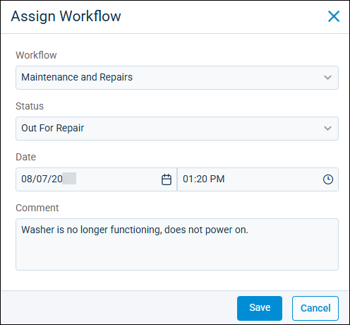

Source: https://rmxhelp.rentmanager.com/Topics/Express/KB/Asset-Workflow-Process.htm
Asset Workflow Process
Asset workflows allow you to define procedures—such as purchasing, maintenance, or sales—and track the progress of assets in those procedures using asset statuses. For example, if an asset is in maintenance, you can start with a Vendor Contacted status. Then, the workflow can take the asset through the statuses of Asset Shipped, Asset Received By Vendor, Vendor Shipped Back, and so on as the process takes place.
Rent Manager is flexible with the in-between statuses of the asset. For example, if the asset wasn't acceptable when your business received it after maintenance, you can move it back to the status of Asset Shipped to start the process over again.
With workflows, any user with the appropriate privileges can update the status of the asset. In the previous example, your office staff may receive the communication that the vendor received the asset for service, but your maintenance staff would know when the asset is placed back in use. Any of these users can move the asset through the workflow, which communicates to everyone the state of the asset.
Related Privileges
| Group | Privilege | Column |
|---|---|---|
| Asset Management | Asset Statuses | View |
| Manage Assets | View, Edit |
If the asset is a home and is linked to a unit, the following privilege is also required:
| Group | Privilege | Column |
|---|---|---|
| Properties/Units | Units | View, Edit |
For more information, refer to Control User Access.
More Information
Before sending an asset through a workflow, you must first create the needed workflow(s) in Rent Manager. For more information, refer to Add an Asset Workflow.
Step 1: Assign a Workflow
To assign an asset to a workflow, do the following:
-
Go to
 arrow_forward Rental Info arrow_forward General arrow_forward Assets and select an asset from the list.
arrow_forward Rental Info arrow_forward General arrow_forward Assets and select an asset from the list.
The asset's details page displays. -
On the action bar to the right, click
 arrow_forward Assign Workflow.
arrow_forward Assign Workflow.More Information
If the asset is already currently assigned to a workflow but you need to change it to a different workflow, instead select
arrow_forward Change Workflow. For more information, refer to Change an Asset Workflow.
-
Enter information into the available fields.
Field Description Comment
Additional details regarding the asset's condition or the reason it is being sent through the workflow.
Date
The date and time at which this asset begins the workflow process.
Status
The starting asset status that best describes the asset's current state at the beginning of the process, such as Out for Repairs.
Workflow
The workflow procedure the asset must undergo, such as Send for Repairs.
-
Click Save.
The asset is assigned to the workflow and the selected Status is assigned.
Step 2: Advance a Workflow
To advance an asset to the next stage in a workflow, do the following:
-
Go to
arrow_forward Rental Info arrow_forward General arrow_forward Assets and select an asset from the list.
The asset's details page displays. -
On the action bar to the right, click
arrow_forward Advance Workflow.
The Advance Workflow pop-up displays. -
Enter information into the available fields.
Field Description Comment
Additional details regarding the asset's condition or status at this point in the workflow, or other information about its progress.
Date
The date and time at which this asset is set to this stage in the workflow.
Status
The next status to which you wish to send this asset. The available statuses are determined by the assigned asset workflow.
-
Click Save.
The asset progresses to the next stage in the workflow and the status is updated. -
Each time the asset moves to a new stage in the real world, repeat these steps to update the asset's workflow progress in Rent Manager. Once you reach an ending status, the Exit Workflow pop-up displays. Click Yes to complete the workflow.